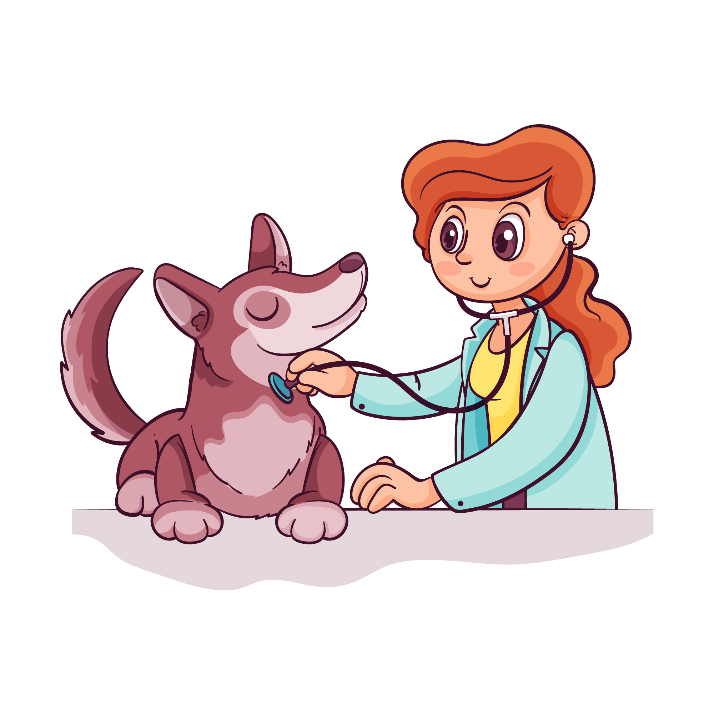
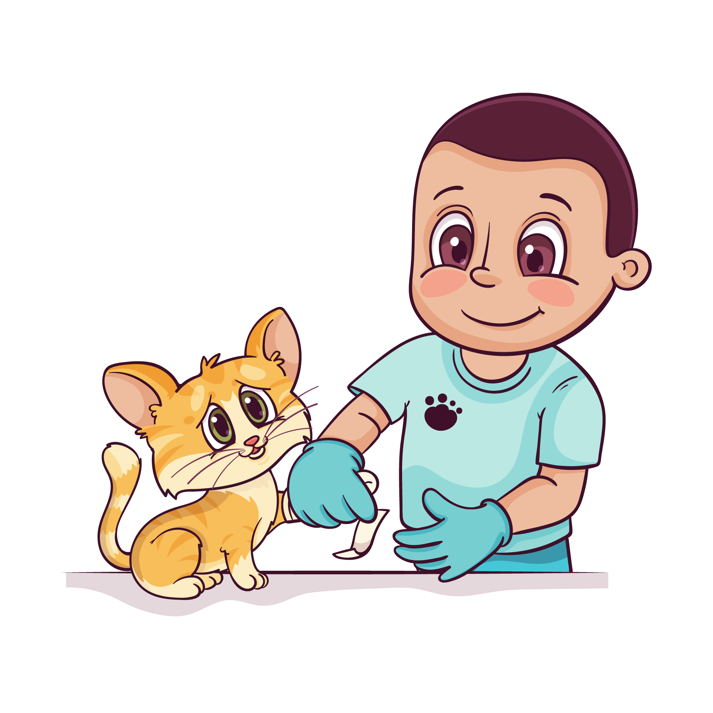
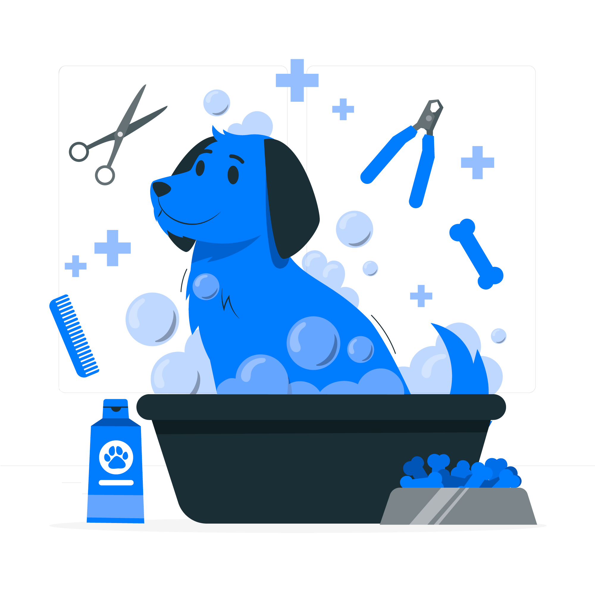

Nossas consultas para o seu animal é realizada por médicos veterinários especialistas. Temos médicos vetérinarios especificos para o seu tipo de animal, seja cachorro e gato, passaro, etc. Marque uma consulta agora mesmo.
Temos médicos veterinarios que é especialista no seu tipo de animal. Não é porque você tem um jacaré em casa que vai deixar o animal morrer, né??? Marque uma cirurgia conosco para o bem do seu animal.
Nossos cuidadores são os melhores da região. Aqui, o seu animal está em boas mãos para tomar um banho, se alimentar, passear com segurança, etc. Marque um horario para o seu animal.
